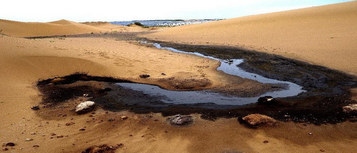

沙漠
June
01
01
腾格里沙漠污染
记者看到了包围在沙漠深处的污水池，浓烈得几乎令人窒息的刺鼻气味扑面而来。

4月30日，宁夏中卫市沙坡头区人民法院对备受社会各界广泛关注的宁夏明盛染化有限公司(以下简称明盛染化公司)污染环境案作出一审判决。被告单位明盛染化公司犯污染环境罪，被处罚金500万元，被告人廉某某犯环境污染罪被判处有期徒刑一年六个月，缓刑二年，并处罚金5万元。此案是新环保法实施以来，中卫市首起污染环境刑事案件，也是腾格里沙漠被污染事件后首例宣判的案件。
法院审理查明，2007年以来，明盛染化公司在废水处理措施未经环境影响评估、未经申报登记和验收的情况下，擅自在厂区外东侧腾格里沙漠采用“石灰中和法”处置工业废水。2009年6月，廉某某开始作为明盛染化公司的法定代表人负责公司全面工作，并决定继续使用“石灰中和法”处置工业废水。2014年4月，明盛染化公司排放污染物许可证到期，但仍继续非法排污。至2014年9月被责令关闭停产时，该公司厂区外东侧腾格里沙漠渗坑内存有大量工业废水。经宁夏环境监测中心站对现场废水取样检测认定，废水中多项检测因子超过国家排放标准。案发后，明盛染化公司及其法定代表人廉某某为防止污染扩大，及时采取措施，消除污染。
法院审理认为，被告明盛染化公司违反国家规定，非法排放、处置有毒物质，严重污染环境，被告人廉某某系被告单位直接负责的主管人员，对被告单位污染环境的行为负有直接责任，被告单位明盛染化公司和被告人廉某某的行为均已触犯刑律，构成污染环境罪，遂作出上述判决。被告单位及被告人均表示服判，不再上诉。
据了解，自腾格里沙漠污染问题发生以来，中卫市委、市政府把环境整治作为当前首要任务，在全市范围内开展了工业企业环境和重大安全隐患大排查大整治，截至2015年4月28日，全市共排查企业345家，发现各类问题1732个，已整改到位1304个，占75.3%；正在整改428个。同时，对环境违法企业和落实不力、失职渎职的公职人员依法依纪严肃追责，共立案调查企业8家，取保候审5人，行政拘留1人，问责追责公职人员15人，其中9人给予党政纪处分，6人作出检查并被通报批评，充分表明了中卫市委、市政府在环境整治方面壮士断腕的勇气和决心，为打造中卫“天蓝、地绿、水清、气爽”的靓丽名片起到了护航作用。
法院审理查明，2007年以来，明盛染化公司在废水处理措施未经环境影响评估、未经申报登记和验收的情况下，擅自在厂区外东侧腾格里沙漠采用“石灰中和法”处置工业废水。2009年6月，廉某某开始作为明盛染化公司的法定代表人负责公司全面工作，并决定继续使用“石灰中和法”处置工业废水。2014年4月，明盛染化公司排放污染物许可证到期，但仍继续非法排污。至2014年9月被责令关闭停产时，该公司厂区外东侧腾格里沙漠渗坑内存有大量工业废水。经宁夏环境监测中心站对现场废水取样检测认定，废水中多项检测因子超过国家排放标准。案发后，明盛染化公司及其法定代表人廉某某为防止污染扩大，及时采取措施，消除污染。
法院审理认为，被告明盛染化公司违反国家规定，非法排放、处置有毒物质，严重污染环境，被告人廉某某系被告单位直接负责的主管人员，对被告单位污染环境的行为负有直接责任，被告单位明盛染化公司和被告人廉某某的行为均已触犯刑律，构成污染环境罪，遂作出上述判决。被告单位及被告人均表示服判，不再上诉。
据了解，自腾格里沙漠污染问题发生以来，中卫市委、市政府把环境整治作为当前首要任务，在全市范围内开展了工业企业环境和重大安全隐患大排查大整治，截至2015年4月28日，全市共排查企业345家，发现各类问题1732个，已整改到位1304个，占75.3%；正在整改428个。同时，对环境违法企业和落实不力、失职渎职的公职人员依法依纪严肃追责，共立案调查企业8家，取保候审5人，行政拘留1人，问责追责公职人员15人，其中9人给予党政纪处分，6人作出检查并被通报批评，充分表明了中卫市委、市政府在环境整治方面壮士断腕的勇气和决心，为打造中卫“天蓝、地绿、水清、气爽”的靓丽名片起到了护航作用。
曾经翠绿的山坡开始裸露黄土地，绿毯似的大地外衣被一层一层地剥掉。
金黄色的沙漠，由于人类过度砍伐，而不断向四周漫延。
罪魁祸首——人类，却正在享受从大自然中获得的荣华富贵。
我们提倡环保，不是说说而已，从我做起，从点滴小事做起！